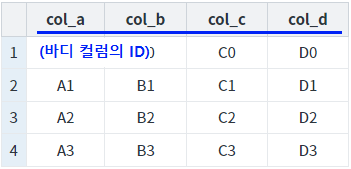
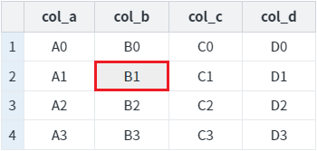
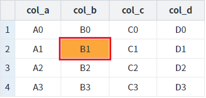
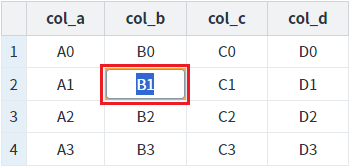
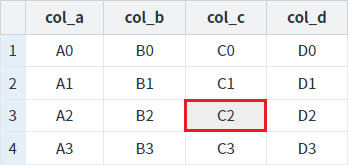
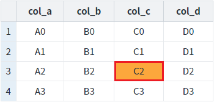
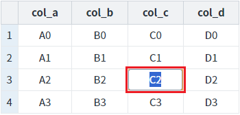

GridView의 셀에 'readOnly'(읽기 전용)를 함수로 설정하는 예제입니다. 'readOnly'가 'true'로 설정되면 셀이 수정 모드로 변경되지 않습니다.
사용할 수 있는 함수는 다음과 같습니다.
setCellReadOnly( rowIndex , colIndex , readOnly ) : 셀 단위 설정
setReadOnly( type , rowIndex , colIndex , readOnlyFlag ) : 첫 번째 인자 'type'을 통해 셀, 컬럼, 로우, GridView 전체를 설정
GridView의 다른 함수를 통해 GridView 전체, 컬럼(Column), 셀(Cell) 단위로도 설정할 수 있습니다.
다음은 GridView의 'readOnly' 설정 관련 함수 목록입니다.
- setCellReadOnly( rowIndex , colIndex , readOnly ) : 셀 단위 설정
- setColumnReadOnly( colIndex , readOnly ) : 컬럼 단위 설정
- setColumnReadOnly( readOnly ) : GridView 전체 설정
- setReadOnly( type , rowIndex , colIndex , readOnlyFlag ) : 첫 번째 인자 'type'을 통해 셀, 컬럼, 로우, GridView 전체를 설정
- setRowReadOnly( rowIndex , readOnly ) : 로우 단위 설정
함수 'setCellReadOnly'를 사용하여 셀에 'readOnly' 설정하기
함수 'setReadOnly'를 사용하여 셀에 'readOnly' 설정하기
STEP 1. 초기 상태를 확인합니다.
모든 셀이 수정 가능하며 각 셀을 클릭하면 수정 모드로 변경됩니다. 'readOnly'가 설정된 셀의 배경색은 회색(#eee)로 설정되어 있습니다. 각 컬럼의 헤드에는 바디 컬럼의 ID가 표시됩니다.
그림 1.브라우저(Chrome) 실행 예시

STEP 2. 컬럼 'col_b'의 두 번째 로우에 'readOnly'를 적용합니다.
버튼 컬럼 'col_b'의 두 번째 로우에 'readOnly' 적용하기 - 함수 setCellReadOnly 사용을 클릭합니다.STEP 3. 실행된 결과를 확인합니다.
컬럼 'col_b'의 두 번째 로우에 'readOnly'가 적용되며 셀의 배경색은 회색(#eee)로 변경됩니다.
그림 2.브라우저(Chrome) 실행 예시 - GridVeiw

STEP 4. 셀을 클릭합니다.
컬럼 'col_b'의 두 번째 로우의 셀을 클릭합니다.
STEP 5. 실행된 결과를 확인합니다.
선택된 셀의 배경색은 변경되지만 수정 모드로 변경되지 않습니다.
그림 3.브라우저(Chrome) 실행 예시 - GridVeiw

STEP 6. 컬럼 'col_b'의 두 번째 로우에 'readOnly'를 해제합니다.
버튼 컬럼 'col_b'의 두 번째 로우에 'readOnly' 해제하기 - 함수 setCellReadOnly 사용을 클릭합니다.STEP 7. 실행된 결과를 확인합니다.
컬럼 'col_b'의 두 번째 로우에 'readOnly'가 해제되며 셀의 배경색은 흰색(#fff)으로 변경됩니다. 기존에 선택된 셀의 배경색이 우선 순위로 표시되어 배경색이 흰색이 아닌 주황색으로 표시됩니다.
그림 4.브라우저(Chrome) 실행 예시 - GridVeiw
STEP 8. 셀을 클릭합니다.
컬럼 'col_b'의 두 번째 로우의 셀을 클릭합니다.
STEP 9. 실행된 결과를 확인합니다.
셀이 수정 모드로 변경됩니다.
그림 5.브라우저(Chrome) 실행 예시 - GridVeiw

STEP 1. 초기 상태를 확인합니다.
모든 셀이 수정 가능하며 각 셀을 클릭하면 수정 모드로 변경됩니다. 'readOnly'가 설정된 셀의 배경색은 회색(#eee)로 설정되어 있습니다. 각 컬럼의 헤드에는 바디 컬럼의 ID가 표시됩니다.
그림 6.브라우저(Chrome) 실행 예시
STEP 2. 컬럼 'col_c'의 세 번째 로우에 'readOnly'를 적용합니다.
버튼 컬럼 'col_c'의 세 번째 로우에 'readOnly' 적용하기 - 함수 setReadOnly 사용을 클릭합니다.STEP 3. 실행된 결과를 확인합니다.
컬럼 'col_c'의 세 번째 로우에 'readOnly'가 적용되며 셀의 배경색은 회색(#eee)로 변경됩니다.
그림 7.브라우저(Chrome) 실행 예시 - GridVeiw

STEP 4. 셀을 클릭합니다.
컬럼 'col_c'의 세 번째 로우의 컬럼 'col_b'의 셀을 클릭합니다.
STEP 5. 실행된 결과를 확인합니다.
선택된 셀의 배경색은 변경되지만 수정 모드로 변경되지 않습니다.
그림 8.브라우저(Chrome) 실행 예시 - GridVeiw

STEP 6. 컬럼 'col_c'의 세 번째 로우에 'readOnly'를 해제합니다.
버튼 컬럼 'col_c'의 세 번째 로우에 'readOnly' 해제하기 - 함수 setReadOnly 사용을 클릭합니다.STEP 7. 실행된 결과를 확인합니다.
컬럼 'col_c'의 세 번째 로우에 'readOnly'가 해제되며 셀의 배경색은 흰색(#fff)으로 변경됩니다. 기존에 선택된 셀의 배경색이 우선 순위로 표시되어 배경색이 흰색이 아닌 주황색으로 표시됩니다.
그림 9.브라우저(Chrome) 실행 예시 - GridVeiw
STEP 8. 셀을 클릭합니다.
컬럼 'col_c'의 세 번째 로우의 셀을 클릭합니다.
STEP 9. 실행된 결과를 확인합니다.
셀이 수정 모드로 변경됩니다.
그림 10.브라우저(Chrome) 실행 예시 - GridVeiw

GridView의 함수 'setCellReadOnly'를 이용하여 스크립트를 작성합니다. 세부 지정은 아래의 스크립트 예시에 작성되어 있습니다.
스크립트 - readOnly 적용하기
//예제 파일에서는 스크립트 scwin.btn_exam1_1_onclick에 작성되어 있습니다. // GridView 'grd_exam1'의 두 번째 로우의 컬럼 'col_b'에 'readOnly'를 적용합니다. grd_exam1.setCellReadOnly(1, "col_b", true);
스크립트 - readOnly 해제하기
//예제 파일에서는 스크립트 scwin.btn_exam1_2_onclick에 작성되어 있습니다. // GridView 'grd_exam1'의 두 번째 로우의 컬럼 'col_b'에 'readOnly'를 해제합니다. grd_exam1.setCellReadOnly(1, "col_b", false);
GridView의 함수 'setReadOnly'를 이용하여 스크립트를 작성합니다. 세부 지정은 아래의 스크립트 예시에 작성되어 있습니다.
스크립트 - readOnly 적용하기
//예제 파일에서는 스크립트 scwin.btn_exam2_1_onclick에 작성되어 있습니다. // GridView 'grd_exam1'의 세 번째 로우의 컬럼 'col_c'에 'readOnly'를 적용합니다. grd_exam1.setReadOnly("cell", 2, "col_c", true);
스크립트 - readOnly 해제하기
//예제 파일에서는 스크립트 scwin.btn_exam2_2_onclick에 작성되어 있습니다. // GridView 'grd_exam1'의 세 번째 로우의 컬럼 'col_c'에 'readOnly'를 해제합니다. grd_exam1.setReadOnly("cell", 2, "col_c", false);
setCellReadOnly( rowIndex , colIndex , readOnly )
setReadOnly( type , rowIndex , colIndex , readOnlyFlag )
[웹스퀘어5 SP5 개발 가이드] GridView
링크 : https://docs1.inswave.com/sp5_user_guide/86bdcf48029b958b